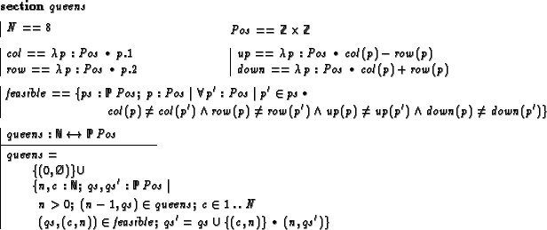
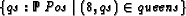
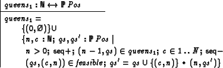
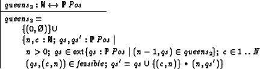

The execution model of ZAP uses concurrent constraint resolution, employing the so-called Andorra Principle to schedule search. This means that deterministic computation is preferred for non-deterministic computation: on resolving the constraints of a goal, those constraints which try to create a choice point are suspended until no other constraints can continue.
If several choices remain in such a situation, those which are textual ``first'' are preferred. However, for recursive definitions, also those choices which are ``older'' are preferred for those which are ``younger''. This is necessary in order to provide fairness. It may lead to unexpected behavior, which is discussed in this section.
Consider a specification of the 8-queens problem:

Execution of the goal

leads to virtual endless search. What is wrong with the specification (resp. ZAP's current execution model)?
The problem is that queens is computed again and again for the same n. Though on the same recursion level the constraint preceed the constraint and is thus priorized, is not priorized for on the upper level, since older constraints are priorized over younger ones. Thus for each choice point of the constraint is backtracked and recomputed.
In fact, there is no actual dependency between and , and thus backtrack is not necessary. However, ZAP is currently not capable of recognizing the independency.
There are several ways how a user can control search, discussed below.
There are two primitive predicates,
(\BEGINSEQ)
and
(\ENDSEQ) which can be used to enforce
sequential execution. Used for queens, this looks as follows:

The constraints enclosed in and are strictly executed sequential. Note that this means, if one of them residuates, the entire group residuates. For the example, we thus ensure that choices for c are always appended to the bottom of the choice tree for qs.
We can enforce the complete enumeration of the solutions on the
next recursion level using the
(\EXT) function from the toolkit. This functions takes
a set and yields its extensional (enumerated) version:

Here, is still backtracked if makes a choice, but since the result of is already computed, this does not hurts very much.
The function can enhance efficiency in many other situations which deal with finite sets. In general, if a set is defined by a set-comprehension, its contents is recomputed at every application point. This behavior is intended, since the application context determines what we actually need to compute of a set (in a constraint , the ``pattern'' of the expression e narrows what to compute from S). However, for problems such as queens this behavior is not adequate.